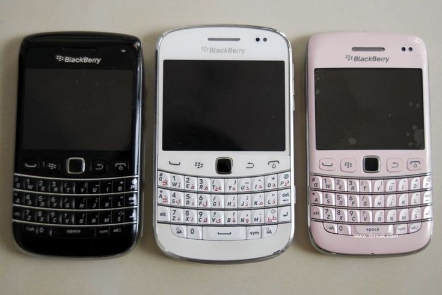
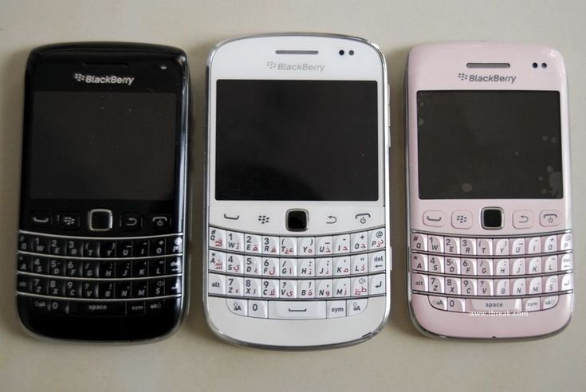
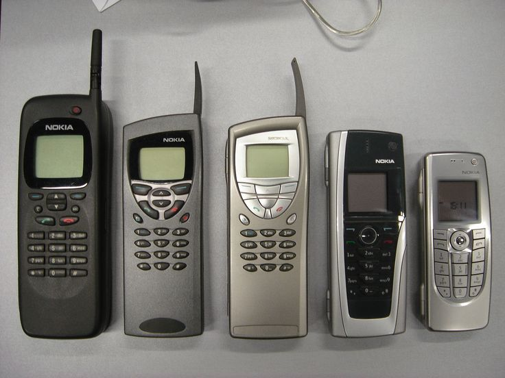
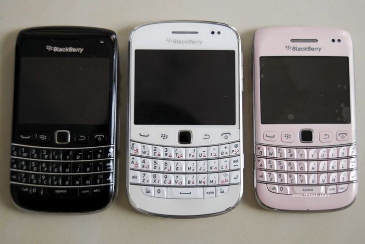
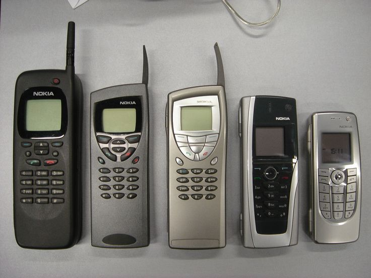
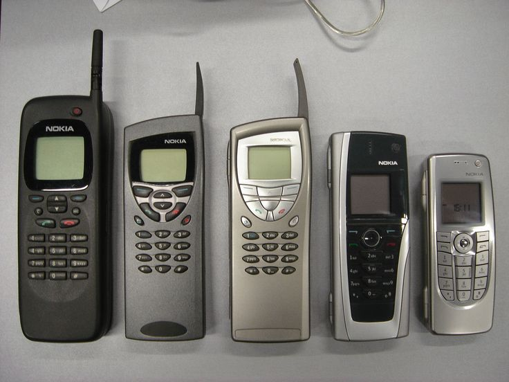
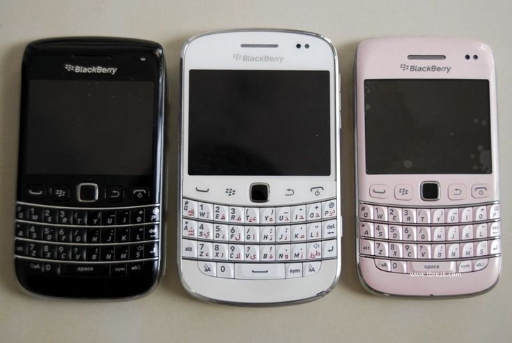
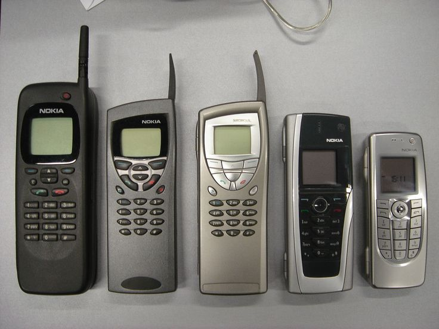

 





The phones represent small parts of my life through image. I took phones, especially flip phones, to represent quantitative data of my life. This also comes from me growing up in the mid to late 2000s, where phones were starting to become more widely used by everyone but continuing to be a status symbol in most of the Western world. This collage is meant to be nostalgic, feature older devices, because I was obsessed with technology growing up. The two phones represent my two sisters, the three Blackberry phones are how many pets I had growing up. More information can be found for each photo in the alternate text.